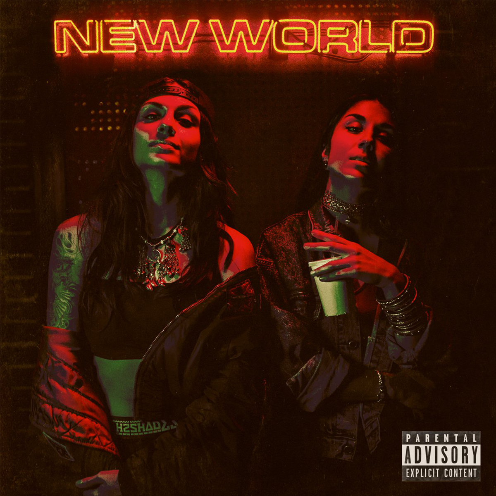

Krewella was formed in 2007 by Pakistani-American sisters Jahan and Yasmine Yousaf, together with producer Kris Trindl. Jahan and Kris met at a Glenbrook North High School party in 2006. They were in a relationship; however, their relationship ended in 2011 and Kris Trindl ended up leaving the group, leaving Krewella to become a duo. As the duo's fame rose, their music became a blend of self-produced electro house and dubstep- with influences of many other EDM styles, including some samples with various styles of other genres added in such as rap. Over the years, after Trindl's depature from the band, this duo later went on to quickly climbing the steps to fame, and collaborations with various other growing artists.
 Krewella Overview: Learn MorePersonally, the duo of the band, Krewella, has been my longest all-time favorite band due the overall quality of Krewella's music, and especially because of their rich background of overcoming betrayal, yet still being able to move forward to create something much better. I believe I was around 11 when I first discovered the existence of Krewella, along with still trying to get a grasp on what sort of genres of music did I even like (aside from all of the early 2000s pop music which was widely popular within everyone around me at the time). I initially got drawn to the way the blended all of the different styles of EDM and even a bit of rap to create this new blended mixture of music. They also had a very fun feeling to each of their songs, because mostly all of their songs were about empowerment, confidence, and meaningful struggles, which was different than a lot of the other songs I've heard which were all very surface-level or too deep in an issue for an 11 year old to listen to.